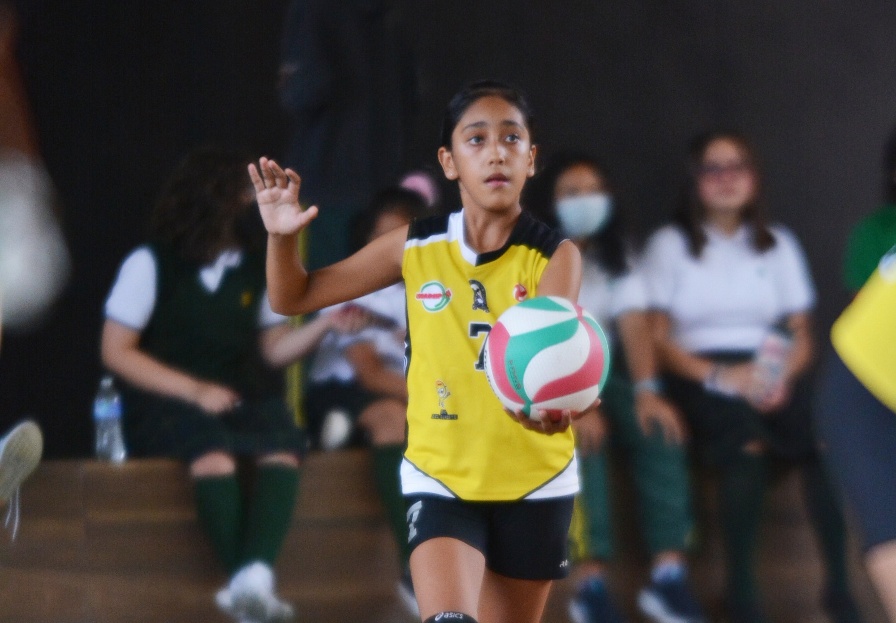
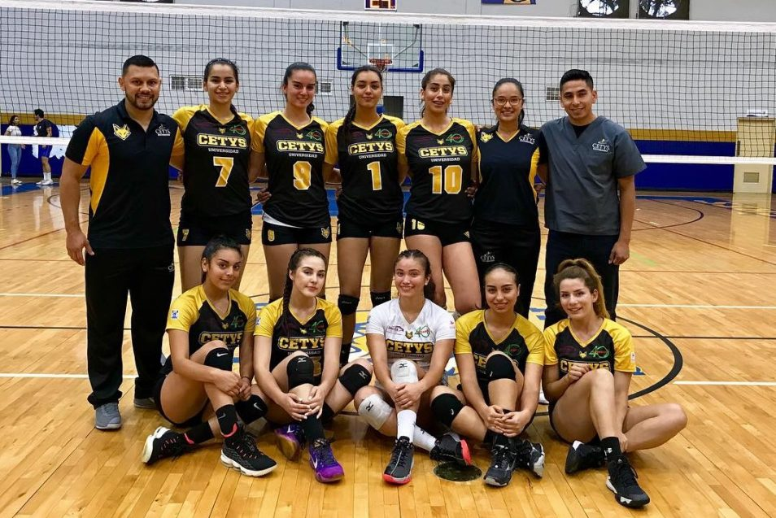
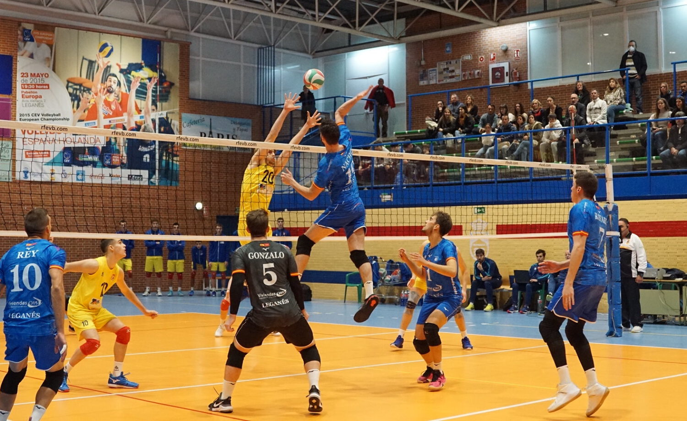

Estas categorías de edad son comunes en muchas competiciones juveniles de voleibol. Cada categoría está diseñada para permitir un desarrollo progresivo de las habilidades, una mayor comprensión del juego y una preparación para niveles más altos de competencia. Sin embargo, las categorías específicas pueden variar según las regulaciones de la federación de voleibol de cada país y las organizaciones deportivas locales.
En esta categoría, los jugadores tienen menos de 12 años de edad. Se centra en introducir a los niños al juego y desarrollar sus habilidades básicas de voleibol. Se juega en una cancha más pequeña con reglas adaptadas para su edad.
Los jugadores tienen menos de 14 años. Aquí, se continúa enfocándose en el desarrollo de habilidades fundamentales y en la comprensión básica del juego. La cancha y las reglas son ajustadas para adaptarse a la edad.
En esta categoría, los jugadores tienen menos de 16 años. Se espera que los jugadores tengan un conocimiento más profundo de las reglas y las habilidades. Los partidos suelen ser más competitivos y los equipos empiezan a trabajar en estrategias y tácticas más avanzadas.
Los jugadores tienen menos de 18 años. Esta es una categoría donde el nivel de juego puede ser muy competitivo, y muchos jugadores a este nivel tienen la intención de continuar en equipos universitarios o de nivel superior. Aquí, las tácticas y estrategias se vuelven más elaboradas.
Esta categoría es para jugadores menores de 20 años. Al igual que la sub-18, se caracteriza por un alto nivel de habilidad y competitividad. Los jugadores que participan en esta categoría generalmente tienen la vista puesta en el voleibol universitario o en equipos nacionales.
  